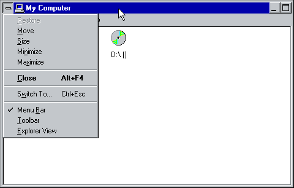
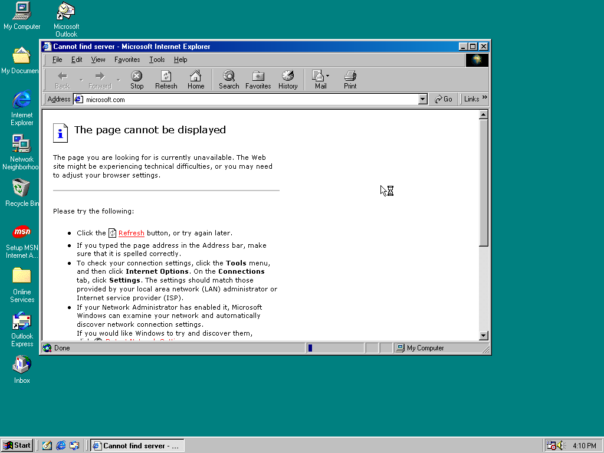
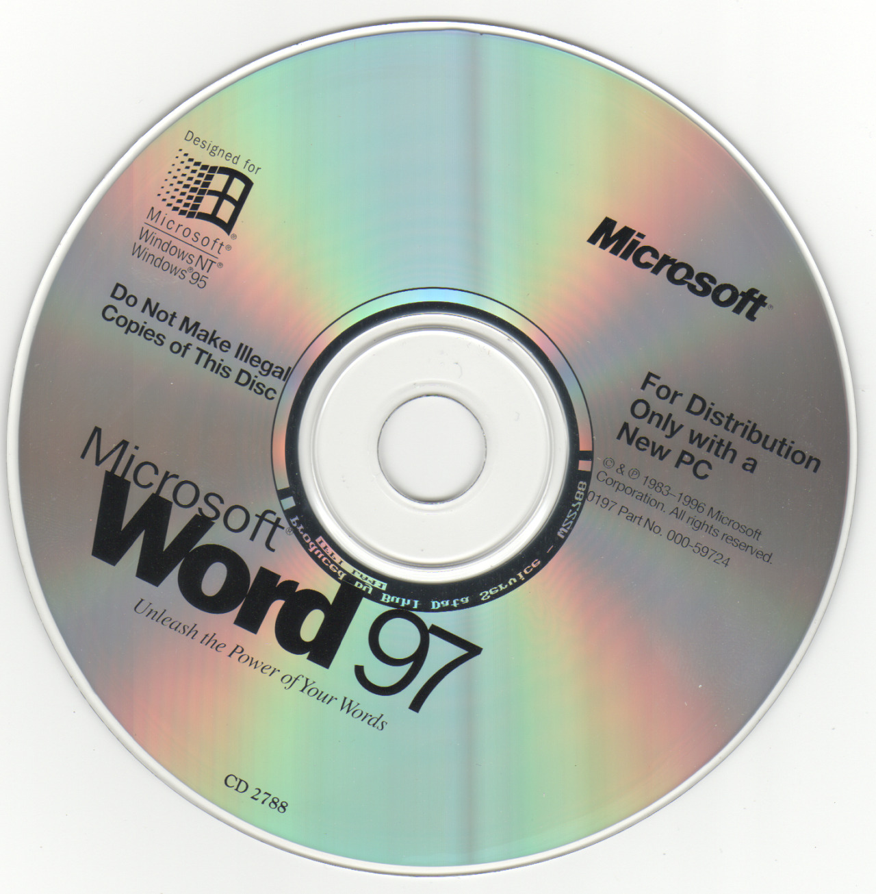
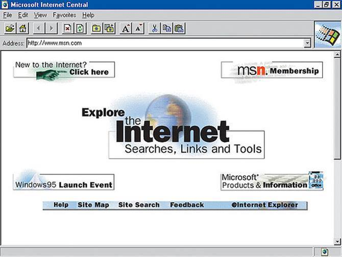

Windows 1.0
Windows 1.0

The [-] button actually does this. The program icon is just… there for decoration, I guess. The [-] button does more of what the program icon does in modern versions of Windows.
The [-] is also the predecessor to the X button that appeared at top-right from Windows 95 onwards. It was the original close function - double-clicking on the icon would immediately close the program, as it still does in modern versions of Windows. Single-clicking an X beside the minimise and maximise/restore buttons was easier and more convenient for users.




no but i have an office 97 cd





nice wallpaper for your desktop
